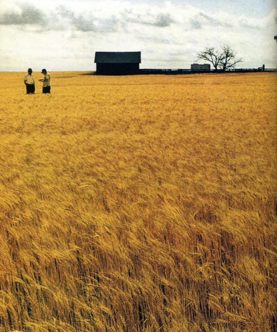

Wyoming Farmkid | Space Nerd. Working for farmers at the intersection of collaboration, technology, and...
Jul 18 - 5 min read
People say that farming is an old-fashioned business. That its legacy, its traditions, and its relationships run deep, and that there’s absolutely no way around that. People say that the whole American food system is broken, that it needs to be fundamentally disrupted, that we need to start over from scratch. People say a lot of things.
In my experience, farmers (you might know them as a particularly bold and crafty subset of “people”) don’t think farming is an old-fashioned business. On the contrary, most farmers I know think it is a high-tech, high-expertise calling, a way of life somewhere between an art and a science. They (rightfully) scoff at the Silicon Valley buzz around self-driving cars- they’ve been driving self-steering equipment for 30 years. They have college degrees in agronomy and accounting and data science, as well as tens of thousands of hours of experience and the inherited know-how of parents and grandparents and great-great grandparents.
They are botanists and entomologists when they’re scouting their fields for pests, HR professionals when they’re searching for and managing hired hands, mechanics when they’re in the shop, and market analysts when they’re marketing grain and evaluating their balance sheets. If you’re looking for high-tech jobs in rural America, look no further than the American Farm (if you passed the lone tree at the crossroads, you’ve gone too far).
Clearly, farming isn’t easy. It’s not for the faint of heart. And one of the (many, many) things that makes it so hard is the legacy, the traditions, and the relationships.
From our greatest strengths flow our greatest weaknesses.
There’s an old saying that “Farmers buy retail and sell wholesale.” The razor-thin margins that so many farmers build their lives on are rapidly getting smaller and smaller (or in a year like 2016, disappearing completely). This is often because, in rural communities, farmers are the engines that turn the wheels that keep whole towns from disappearing off the map. A Montana or Iowa or Mississippi farmer selling his grain to China or Brazil or Europe is, in many cases, one of the only avenues of money flowing into a community. And it’s not only milk from the local grocery store and dinners at the local diner that farmers are buying. It’s also seed from the local dealer, chemical and fertilizer from the local co-op, and machine parts from the local mechanic.
But when we take a step back, we have to wonder how fair this setup is. Farmers are at the mercy of international grain markets, global weather trends, public policy, even exchange rates when they take what they’ve grown to market. That means we have (maybe not actively but certainly passively) put responsibility for the health and survival of rural communities squarely on the shoulders of people who are too often fighting for survival themselves.
US agriculture is trapped in a vicious cycle where fewer and fewer companies own more and more of the farm inputs market and control the prices of goods farmers need more and more aggressively, pushing farmers off the land. A seed company or a chemical manufacturer doesn’t care about the individual farmer, they care about the acre. Who’s doing the farming is irrelevant to whether or not they’ll need inputs to do it. The big input companies (there’s only about eight) rule over American farmland like kings, extracting value from farmers to hit their neat 10% margins no matter how long corn is at $3.50 a bushel. Farmers sell in the world’s free market, and buy in one ruled by be-logoed tyrants.
If there’s one thing we American’s (particularly farmers) have never stood for, it’s tyranny. If we want to talk about injustice at the eating end of the food system, let’s start by addressing it at the growing end.
If we want to revitalize the American food system, let’s start by fighting for free and fair markets for farm inputs. By making the materials needed for farming more fairly and transparently bought and sold, we’ll lower the barrier to becoming a farmer and give existing farmers the ability to plan better, to optimize the way they farm, and to make investments in the future of their operations.
We American’s are enchanted by the free market because (when it works) it’s the truest sort of economic democracy. It doesn’t discriminate on race or gender or social practice. It has no political or religious affiliations. It simply empowers the people who work the hardest, who invest the most, and who move swiftly when conditions changes. That’s what we (the eaters) want farmers to do. We want them to work hard, to invest in the future of their farms (and thus in the future of the water, soil, and air that we all share), and to change quickly in response to our tastes, to climactic shifts, and to practices and products becoming obsolete.
We know what we want, and we know how achieve it.
So what do we want to do? Do we want to continue talking about hyper-energy-intensive urban food pods and the way that farming could be if all of America was only like rural Spain in the 1700s, or are we going to get to work? Are farmers going to continue to struggle under the weight of an industry that’s cannibalizing them while trying desperately to keep their rural communities afloat?
I believe that we will, in the true legacy of our agricultural forefathers, stand together to push back against the practices that pit farmer against farmer. We will use the tools at our disposal; our technology, our grit, our idealism, and the strength of the rural communities that we’ve built and preserved, to fight for freedom, for fairness, and for a food system that could rightly, without caveat or reservation, be called the best in the world.
. . .
I work for farmers at Farmers Business Network. We connect farmers across the country in an agronomic network that allows them to share information and learn about best practices and effective products from other farmers. We put the power of world-class technology in farmers hands, and hopefully make farming a little less lonely along the way.
Thanks for reading. If you enjoyed this, a click on the green heart below would be wonderful. Looking forward to comments from disagreers! Then, you might enjoy exploring what exactly it means to be a farmer/person. Sarah Mock